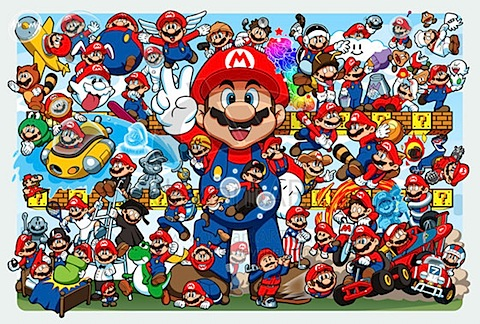

Aboun Mario
Super Mario es una serie de videojuegos de plataformas creados por la empresa desarrolladora Nintendo y protagonizados por su mascota, Mario. También conocida como la serie Super Mario Bros. o simplemente la serie Mario, es la serie principal de la franquicia de Mario.
MArio trough time
Mario's Characteristics
- Red hat
- Moustache
- One brother
Mario's friends
Los videojuegos de Super Mario siguen las aventuras del plomero Mario, por lo general en el ficticio Reino Champiñón. A menudo se le une su hermano, Luigi, y ocasionalmente, otros miembros de la franquicia. Los videojuegos tienen tramas generalmente simples, en los que Mario debe rescatar a la princesa Peach que es secuestrada por el antagonista principal de la franquicia, Bowser.